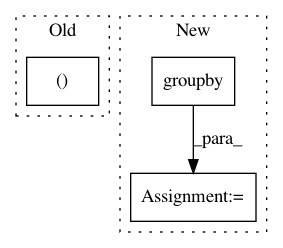

6e6c12425a787d8c954ce5c31ceed59cdd531001,kraken/lib/ctc_decoder.py,,greedy_decoder,#,48
Before Change
start = i
code = dec[i]
if start is not None and (dec[i-1] != dec[i]):
x.append((code, start, i , val[start:i+1].max().data[-1]))
start = None
return x
After Change
seq_len = outputs.shape[1]
mask = np.eye(outputs.shape[0], dtype="bool")[labels].T
classes = []
for label, group in groupby(zip(np.arange(seq_len), labels, outputs[mask]), key=lambda x: x[1]):
group = list(group)
if label != 0:
classes.append((label, group[0][0], group[-1][0], max(x[2] for x in group)))
return classes
def blank_threshold_decoder(outputs, threshold=0.5):
In pattern: SUPERPATTERN
Frequency: 3
Non-data size: 3
Instances
Project Name: mittagessen/kraken
Commit Name: 6e6c12425a787d8c954ce5c31ceed59cdd531001
Time: 2018-05-20
Author: mittagessen@l.unchti.me
File Name: kraken/lib/ctc_decoder.py
Class Name:
Method Name: greedy_decoder
Project Name: Pinafore/qb
Commit Name: e79449afe45f4da6f1756a7d92bdd3cd6618c638
Time: 2018-04-25
Author: sjtufs@gmail.com
File Name: qanta/buzzer/util.py
Class Name:
Method Name: process_question
Project Name: CyberReboot/NetworkML
Commit Name: a908909495f00c61b52dd184a6275dd25abd0818
Time: 2020-04-08
Author: josh@vandervecken.com
File Name: networkml/featurizers/funcs/host.py
Class Name: HostBase
Method Name: _tshark_ports